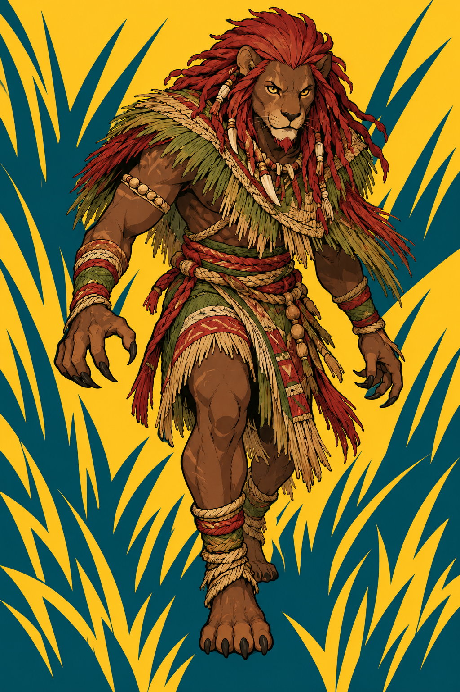
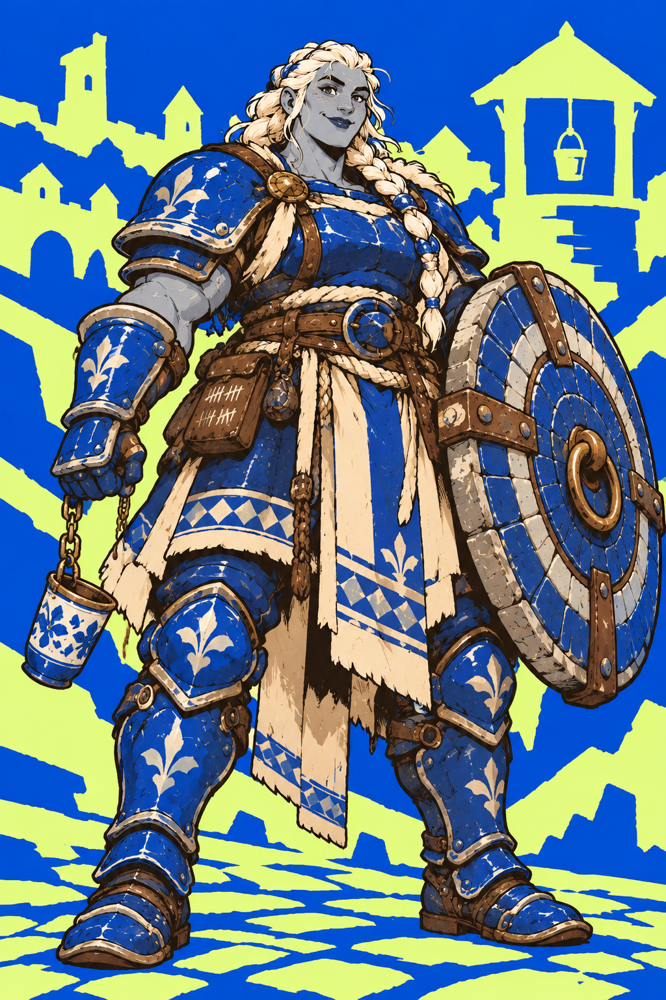
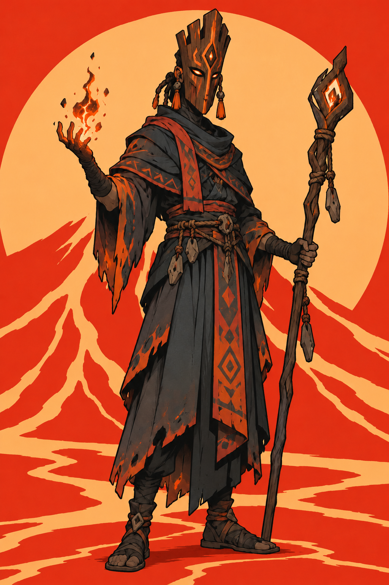
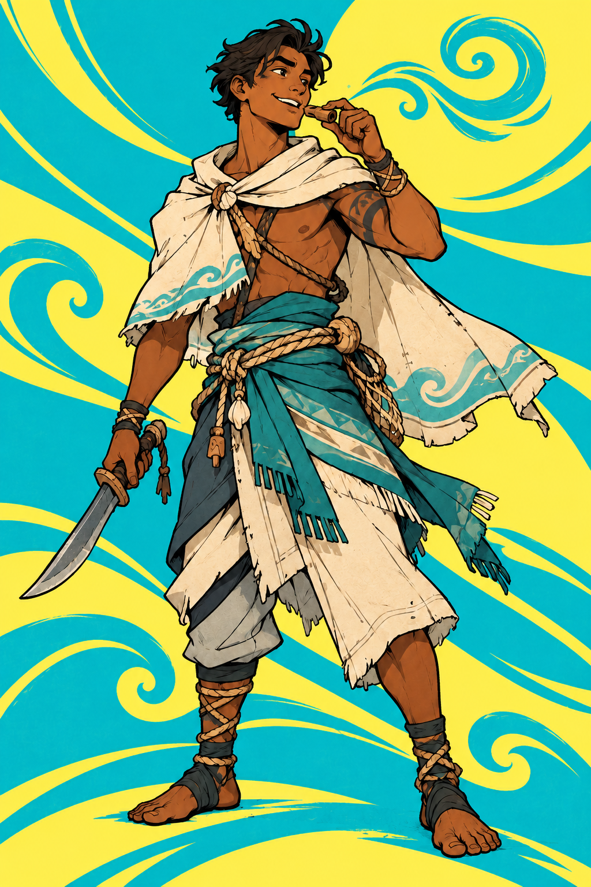
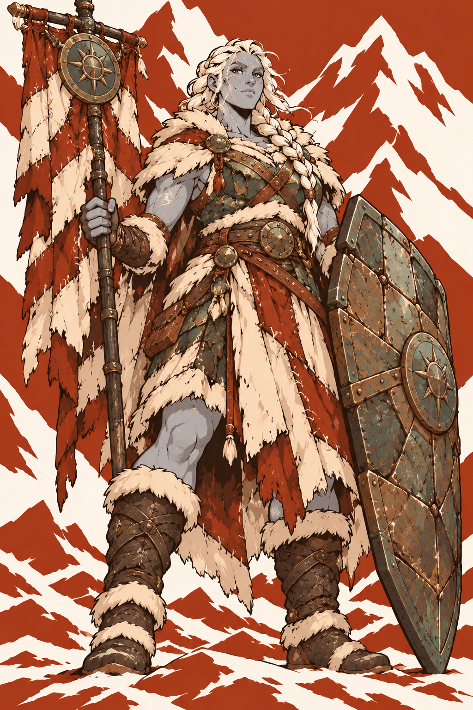
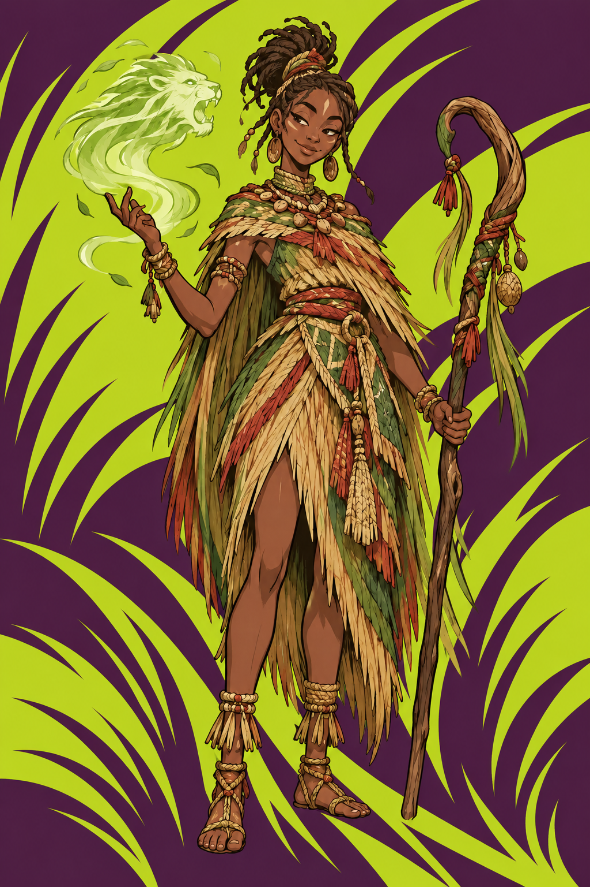
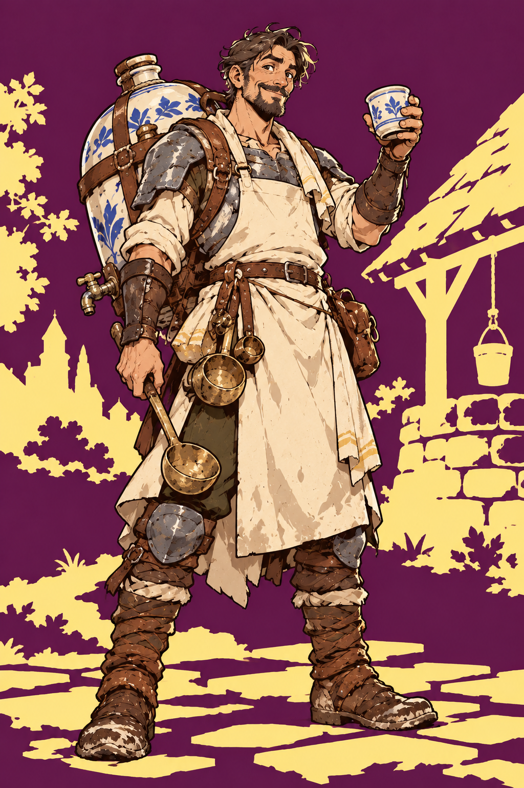
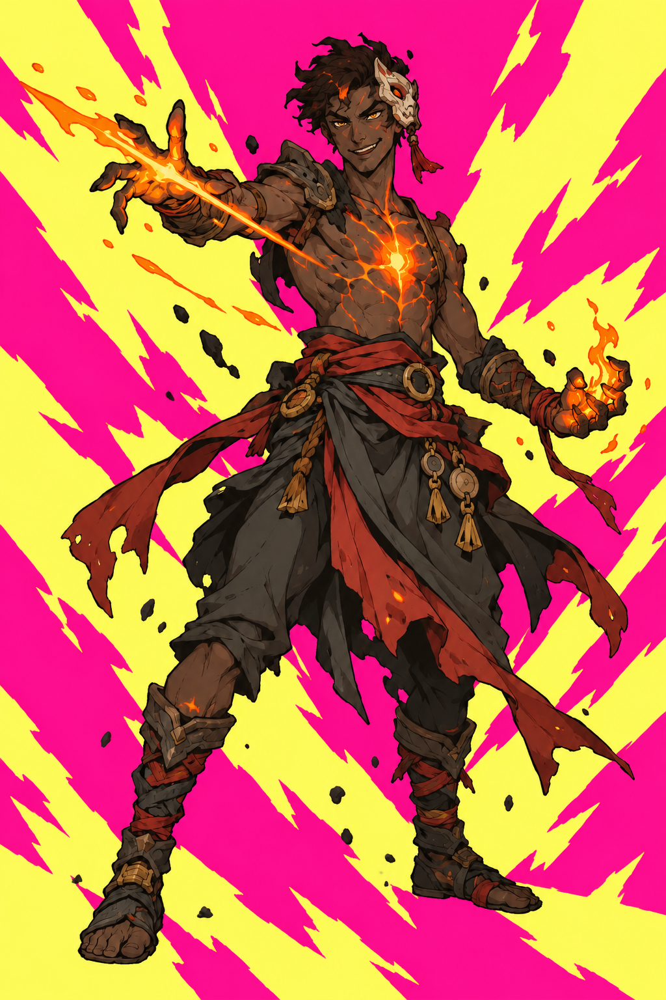
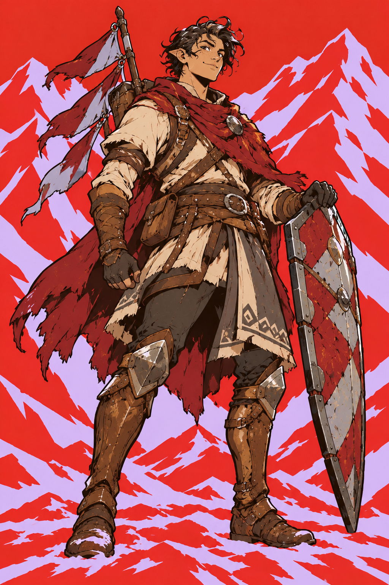
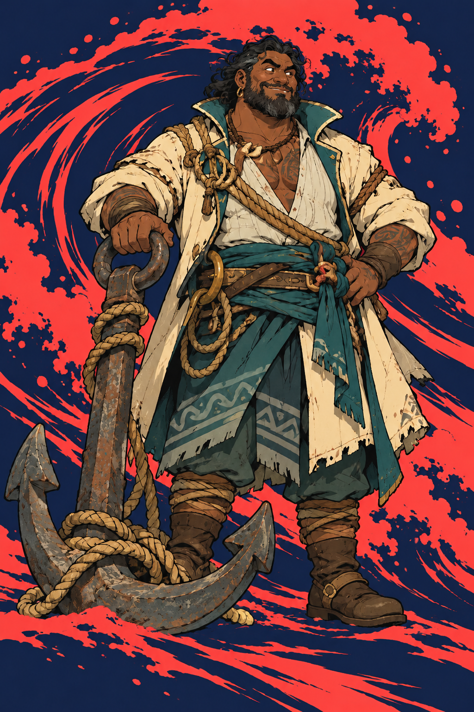

Battlescrap · current starter art
Selected abilities, regional rules and design notes live in the Design Draft. Open the current PnP.

Kalawi Bloodmane
Hester Wellward
Voru Cinderveil
Tavi Sailwhistle
Demea Lastbanner
Niala Grassveil
Perrin Lastdrop
Ketu Ashheart
Ilex Marchstep
Orro StormanchorHighholm and Timberwood are later recruits; their approved portraits are retained in assets/heroes/approved-v9. No regional powers on starters.